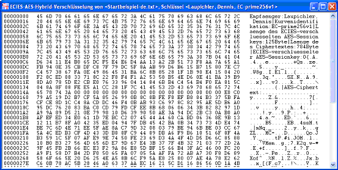

Dialog ECIES-encryption
This dialog is supposed to encrypt documents based on the ECIES-encryption.
ECIES is a hybrid scheme by using the ECDH- and AES algorithm. Hybrid encryption is the most widely deployed method of transferring encrypted data. More details on the hybrid encryption method can be found in the script.
If you have not already created an asymmetric key, you have to do this before calling the dialogu for ECIES encryption:
In the menu of CrypTool under Key Management \ Key Generation you can find appropriate tools for generating ECC key pairs and storing them in the CrypTool database (PSE file).
After you have a valid ECC key pair, you can open a document and start the encryption dialog through the menu selectionEn/Decrypt \ Hybrid\ ECC-AES-Encryption .
After selecting a key pair you can start the encryption by clicking the button encrypt.
The required encryption time can be shown by activating the checkbox.
The encrypted ECIES-document is shown in the CrypTool main window:
This data can then be used as input for hybrid decryption, which inverts the whole encryption process.